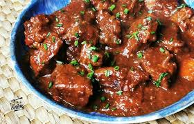

Ingredientes:
- 500g de carne de ternera en cubos
- 2 papas grandes cortadas en trozos
- 2 zanahorias en rodajas
- 1 cebolla picada
- 2 dientes de ajo picados
- 1 taza de caldo de carne
- ½ taza de vino tinto
- 1 hoja de laurel
- Sal y pimienta al gusto
- Aceite de oliva
Preparación:
- Dora la carne en una olla con aceite de oliva.
- Añade la cebolla y el ajo, y cocina hasta que estén dorados.
- Vierte el vino tinto y deja reducir por unos minutos.
- Agrega el caldo de carne, la hoja de laurel y las verduras.
- Cubre y cocina a fuego bajo durante 1 hora, hasta que la carne esté tierna.
- Rectifica la sazón, sirve caliente y disfruta. 🥘🔥